Personalized preparation.Engineered results.
We use diagnostics to build a test prep plan around each learner’s gaps and goals, then adapt the practice as they progress. School partners get reports that show where students need support.
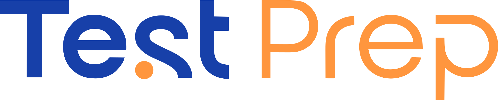
01 / 03Test preparationWe use diagnostics to build a test prep plan around each learner’s gaps and goals, then adapt the practice as they progress. School partners get reports that show where students need support.
Tailored solutions that connect assessment and reporting with learning resources and expert academic support, so organizations can see where learners need help and decide what to do next.
A student development and future planning platform that brings experiences, reflection, and research into an evolving student profile. Students and counselors can use it together to plan what comes next.
Shall we enter?
An intelligent SAT resource: students study at their own pace, with a question bank and resources customized to each one, while human experts guide them and step in.
Support in all its forms, for students, schools, instructors and counselors: everyone better prepared for the SAT, and for scholarships.
ELMY turns learning data into decisions, and proves whether they worked.
Ahmad answered question 7 incorrectly.
Ahmad scored 38% on functions.
Functions are Ahmad’s biggest weakness in math.
Ahmad needs targeted work on functions.
Lessons, questions and instructor support are assigned.
Ahmad is tested again after the intervention.
Functions improved from 38% to 73%.
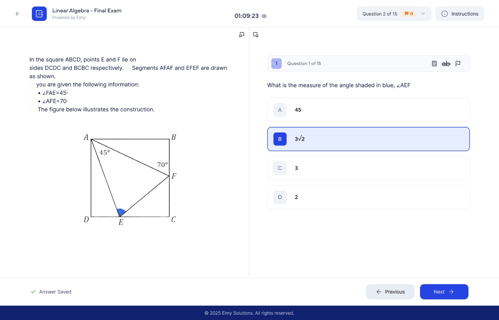
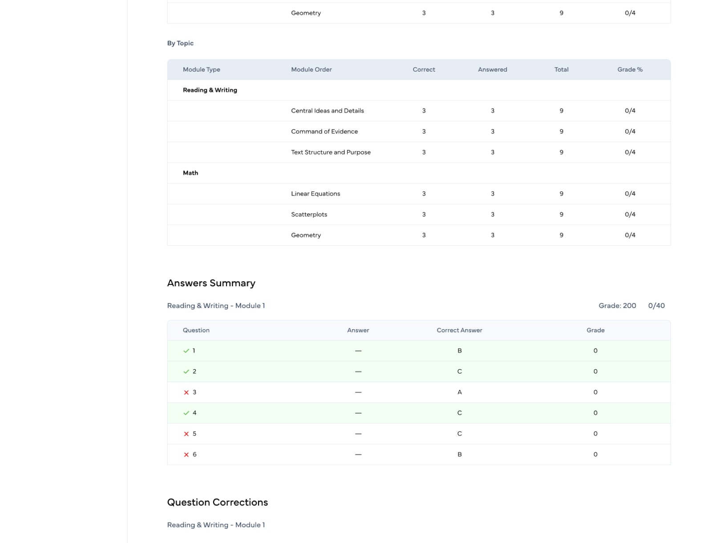
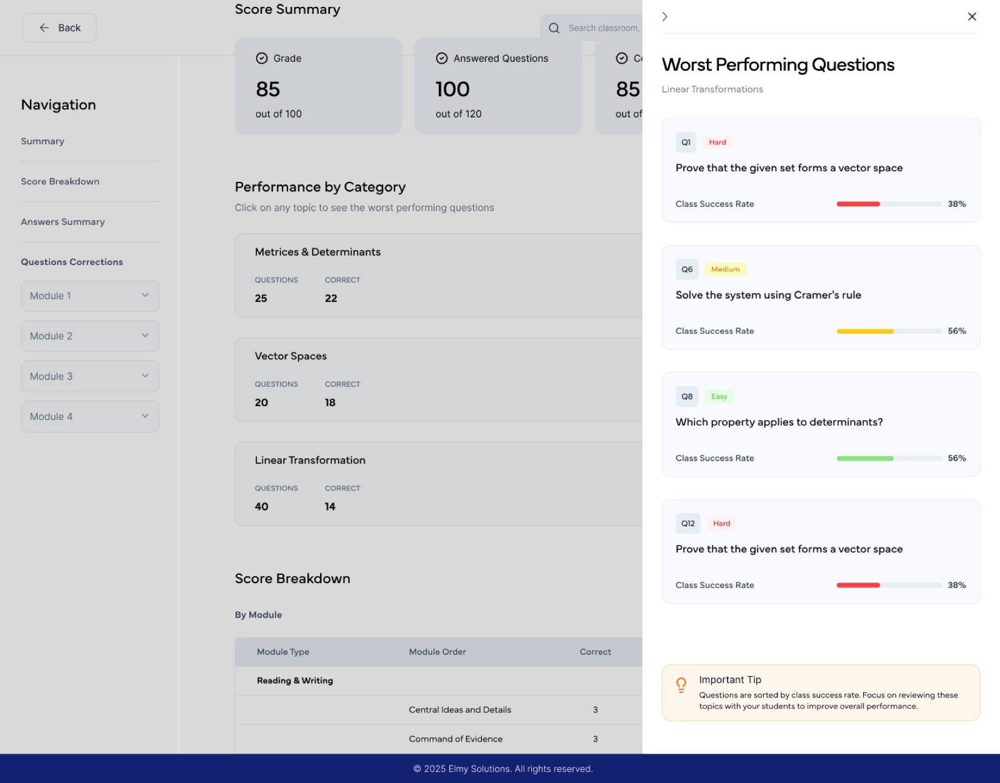
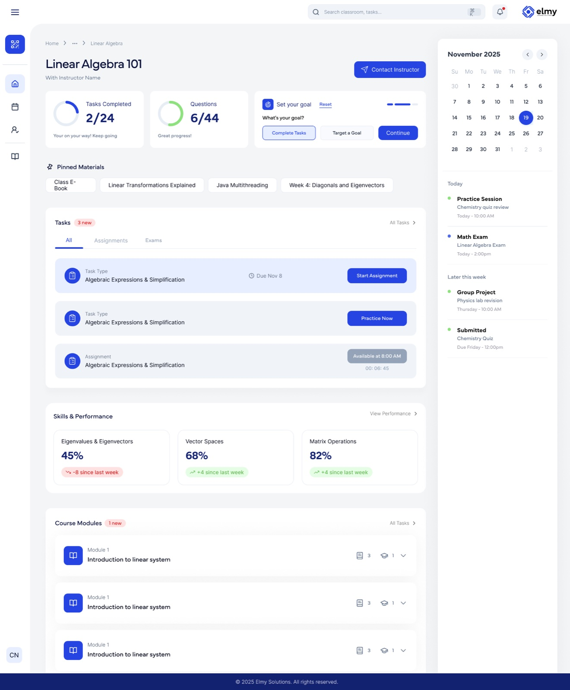
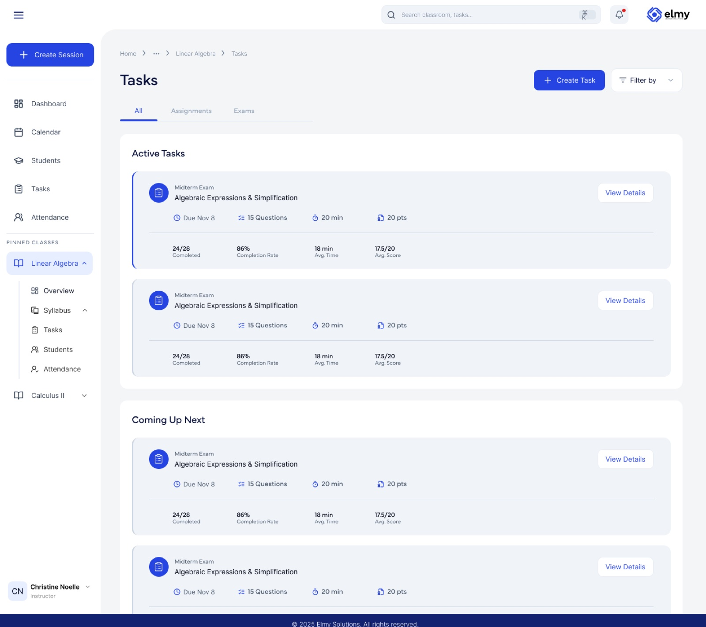
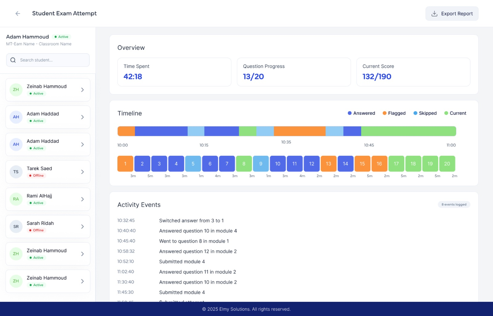
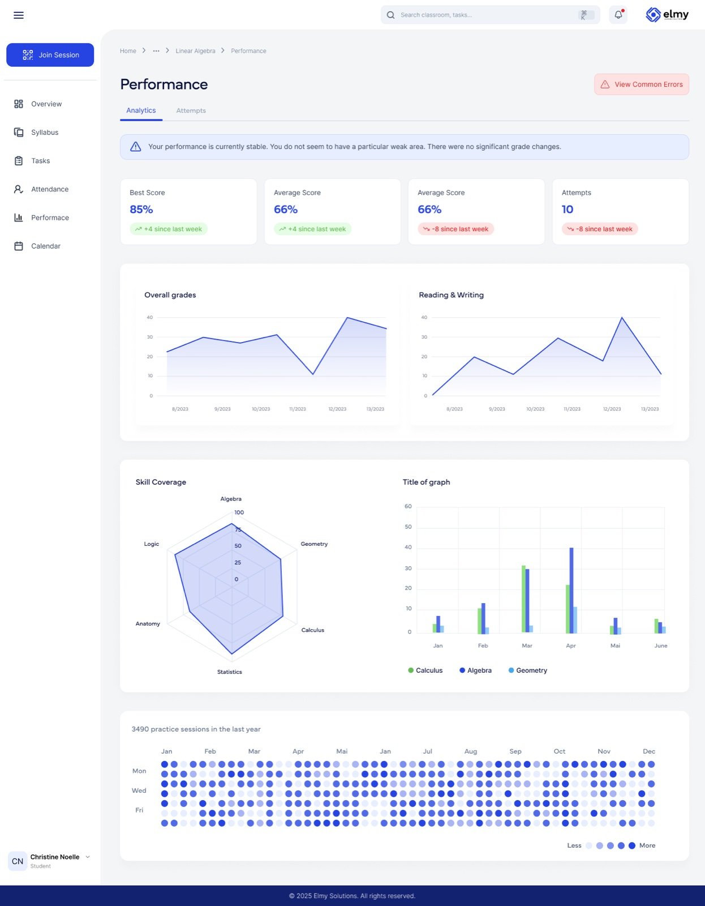
Illustrative One student, Ahmad, through the loop.
Every school, ready to guide its own students
SAT tutoring for the Foundation’s top performers. The goal: every one of them above 1350, the score universities reward with a scholarship.
Every student who scores above 1350 gets a scholarship, from the university itself, wherever the SAT is part of admission.
The end goal: the El Khalil Foundation’s top students at university, on a scholarship their score earned.
Every diagnostic and practice test is scored and tagged in ELMY, then turned into a clear report for the Foundation and each school.
Scored and tagged in ELMY,
reported by TestPrep.
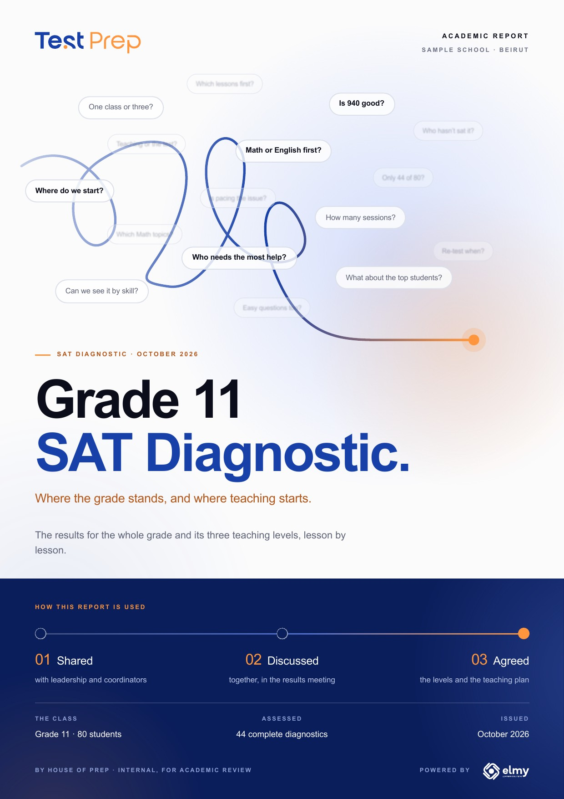
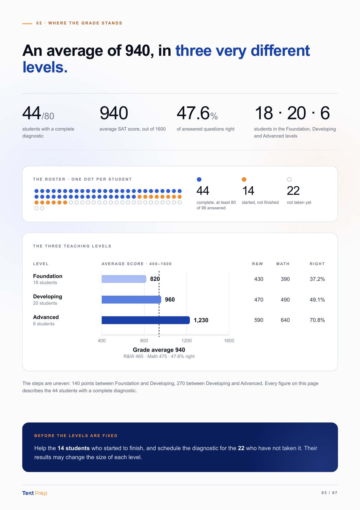
Sample report pages · illustrative figures for a sample schoolDay 1 introduced the scholarship to the schools. Day 2 is with their instructors and counselors, at the Foundation.
Students have choices to make. What can they base them on?
WeGuide helps students turn exploration into a clearer direction and an actionable next-step plan.
28 modules across Grades 10 to 12. Each year leaves the student with something real.
Understanding herself and discovering possibilities.
Exploring pathways and making informed decisions.
Turning decisions into action.
The counselor already brings the judgment. What helps is seeing what each student tried, learned and still wonders about, between meetings.
Every student’s summary linked to its evidence, with a simple task queue and report controls.
The evidence starts a conversation. It does not decide a student’s future.
Universities run an orientation day: what they offer, where students can apply, the requirements and the options.
Three things we will tackle, together.
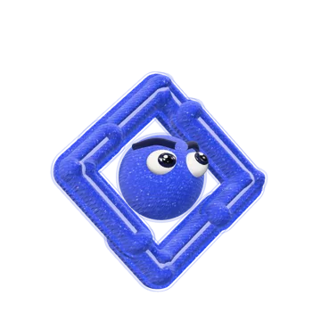
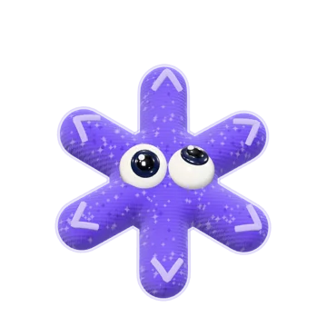
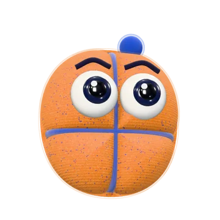
All amounts in USD. Each component can be chosen on its own; official exam registration fees are confirmed separately.